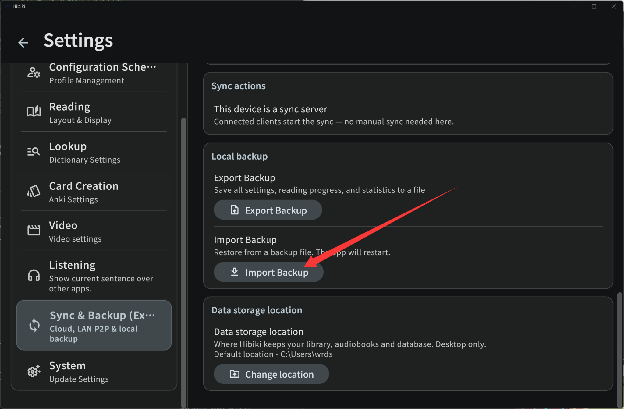
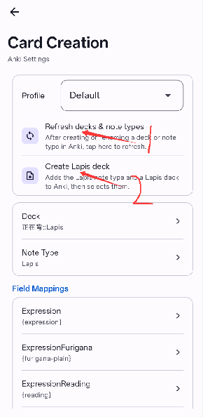
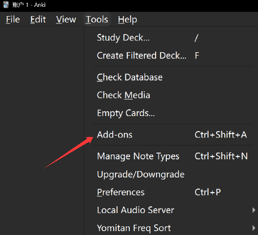
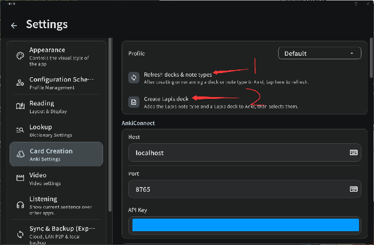

三步走：装上 → 一键导入推荐词典和发音音频 → 接上 Anki。词典是一整个打包好的备份，不用一本一本挑；Anki 那步照着图点两个按钮就完事。
Android 选 arm64，Windows 选 .exe。
设置 → 同步与备份 → 导入备份，一步到位。
刷新牌组 → 一键创建 Lapis 牌组，完成。
去 GitHub Releases 下最新版：
arm64 的 .apk（需 Android 7.0 及以上）。.exe 安装包。这是一个打包好的备份文件，含推荐单词词典、音调词典、词频词典，以及日语 / 英语本地发音音频库。新手强烈推荐——省去逐本找词典的所有麻烦（也可以跳过，之后自己导入词典）。
文件较大，下载可以挂在后台——教程说的五分钟不含这段下载时间。
下载完成后，打开 Fushi：设置 → 同步与备份 → 点「导入备份」，选中刚下好的文件。

Anki——名字来自「暗記（あんき）」——是世界上使用最广的间隔重复（SRS）软件。你在 Fushi 里查到的词，一键送进 Anki，用最少的复习时间达到最好的记忆效果。先从 Anki 官网 装好它。

2055492159，然后重启 Anki。

阅读主题、字体、注音假名、界面缩放、同步后端……设置页里逛一圈，看看有没有想按自己习惯调整的。不调也完全能用。
导入一本 EPUB、拖进一集番、或者直接在应用里搜索下载——遇到不认识的词，点一下查，再点一下记住它。有问题来 Discord 问，反馈会被很快处理。
加入 Discord 社区 →